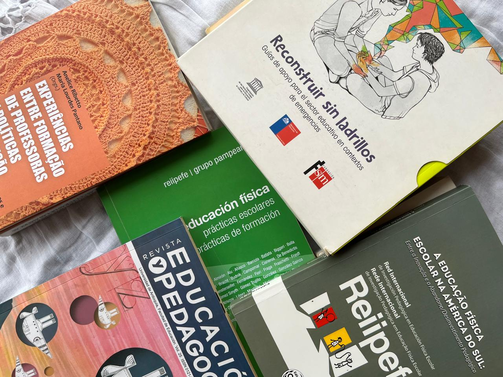

Praxis para leer

Una pequeña muestra de la producción escrita de quienes hacemos Praxis. Artículos de revistas científicas, capítulos de libro, libros de acceso abierto (entre otros) sobre educación, educación física, historia… Mucho escrito para compartir!
Ver más